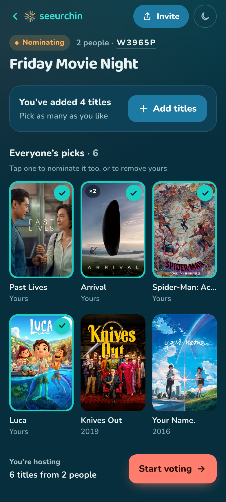
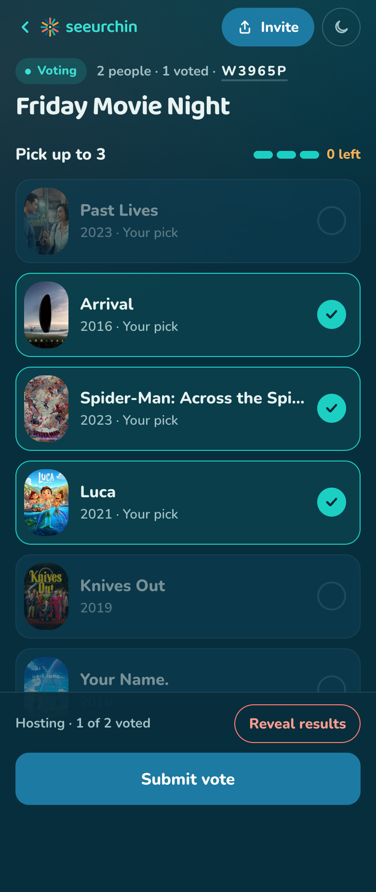
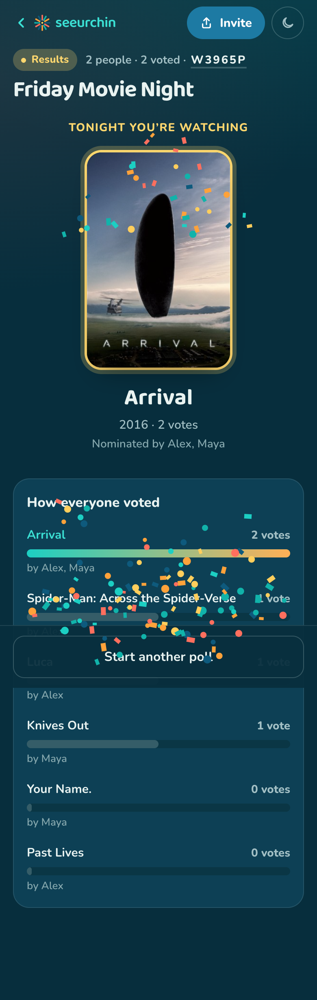
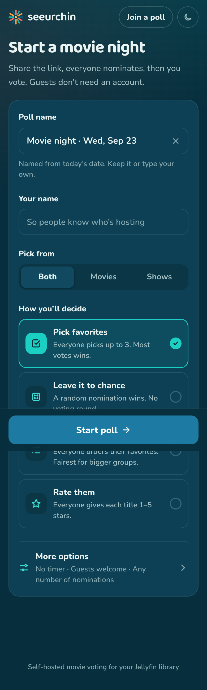
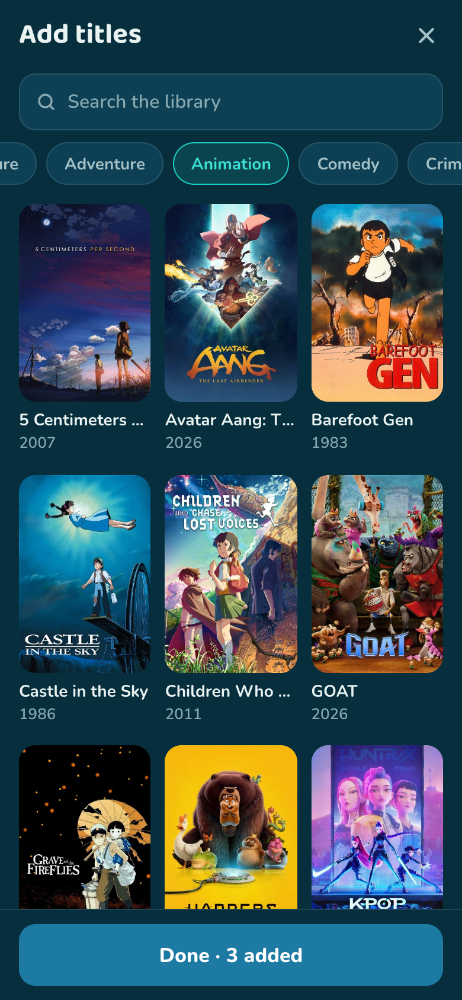
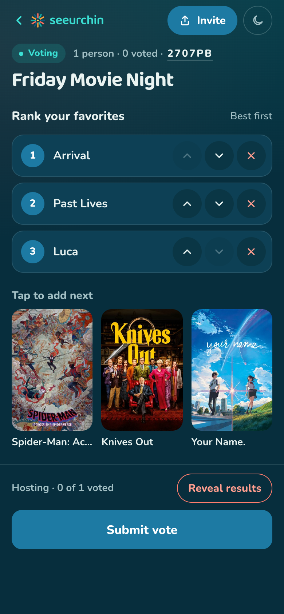
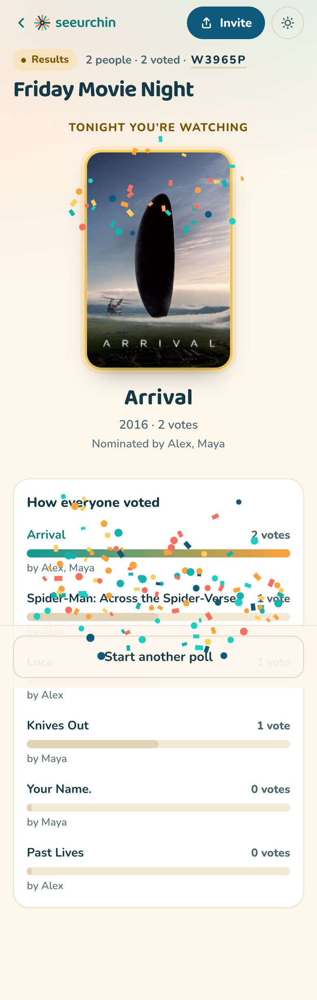

Pick what to watch, together.
Drop a link in the group chat and let everyone collectively decide. seeurchin runs a two-round poll — nominate titles straight from your own Jellyfin library, then vote. Mobile-first, no accounts required.
A single ~13 MB container · pure-Go SQLite · no external database.



Everything for movie night, nothing more
Built to live quietly alongside your existing Jellyfin stack — and to be shared with people outside your network.
Two-round flow
Nominate, then vote, with host-defined controls for min / max / required picks per person.
Four voting methods
Approval, ranked-choice (IRV), star/score, or a no-vote random pick — chosen per poll on a pluggable engine.
Guest-friendly
Join with just a display name — no Jellyfin account needed to vote. Optional login and per-poll passcode when you want a gate.
Browse your real library
Poster-grid search scoped to movies/shows and filterable by genre. Posters are proxied — the browser never sees your API key.
Live updates
Counts, nominations, and results stream over Server-Sent Events. No refreshing — the screen just keeps up.
Write-ins via Seerr optional
Nominate titles you don't have yet by searching TMDB, and auto-request a winning write-in so it downloads.
Admin dashboard optional
An /admin view of every poll's history, with force-advance, delete, and an opt-in retention window — gated by your Jellyfin account.
Light & dark
The "Reef" design system adapts to system, light, or dark — with no flash of the wrong theme.
Tiny footprint
A single distroless image with pure-Go SQLite — no CGO, no external DB. Modern Jellyfin auth, ready for 10.13.
How it works
From "what should we watch?" to a decided winner in four steps.
Create a poll
Pick the library scope, a voting method, and optional nomination rules. You get a short share code and link.
Round 1 — Nominate
Everyone opens the link, joins with a name, and nominates titles. Duplicates merge and show their support.
Round 2 — Vote
The host starts voting and everyone casts a ballot. Ballots stay editable until the round closes.
Results
The host closes the poll and the winner is revealed — with optional live tallies during voting.
A look around
Mobile-first, theme-aware, and designed for passing a phone around.

Start a poll
Browse & filter
Ranked ballot
Results (light)Four ways to decide
Choose a method per poll. Each enforces its own ballot rules server-side.
| Method | How the winner is decided |
|---|---|
| Approval | Each voter approves up to N titles; highest total weight wins. With one vote per option this is plain approval voting. |
| Ranked (IRV) | Instant-runoff: eliminate the lowest first choice and redistribute until a title reaches a majority. |
| Score / Stars | Rate each title 0..max; ranked by total or average score. |
| Random pick | No voting round — when the host closes round 1, one nomination is drawn uniformly at random. The draw is persisted so the winner is stable. |
Up and running in a minute
Run it standalone with Docker, pointed at any reachable Jellyfin server. Only the Jellyfin URL and an API key are required.
- Get a Jellyfin API key from Dashboard → API Keys. It's used only to read the library and is never exposed to the browser.
- Set a session secret so sessions survive restarts.
- Open
http://localhost:5858and create your first poll.
export JELLYFIN_URL=http://your-jellyfin:8096
export JELLYFIN_API_KEY=... # Dashboard → API Keys
export SEEURCHIN_SESSION_SECRET=$(openssl rand -hex 32)
export SEEURCHIN_BASE_URL=http://localhost:5858
docker compose up --buildReady for movie night?
Self-hosted, open source, and small enough to forget it's running.